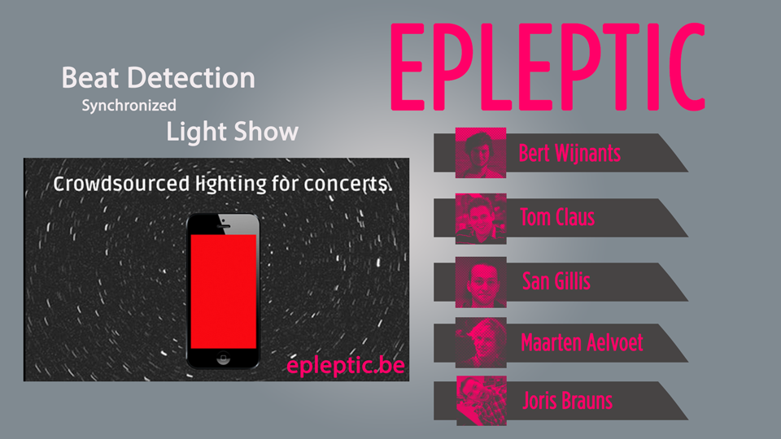
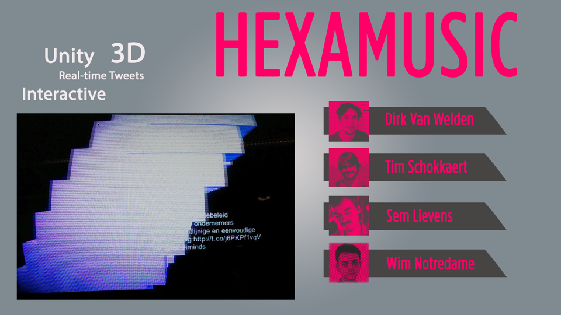
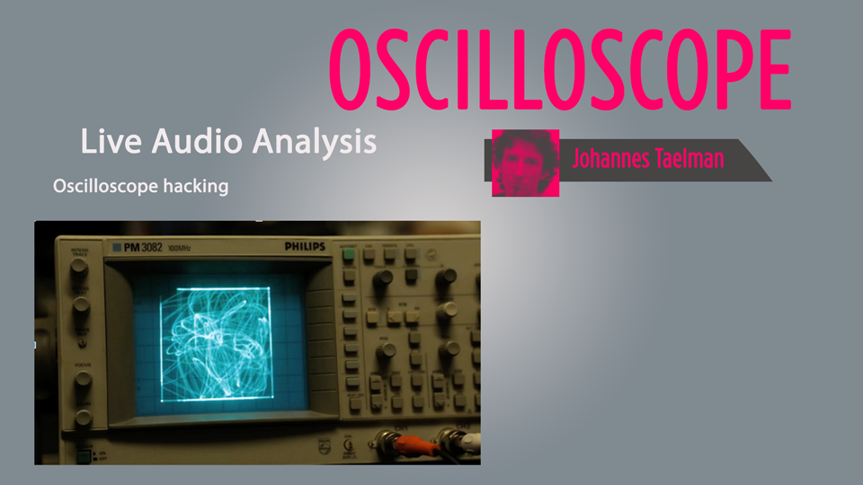
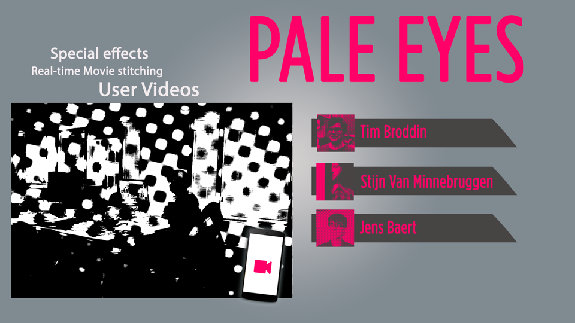
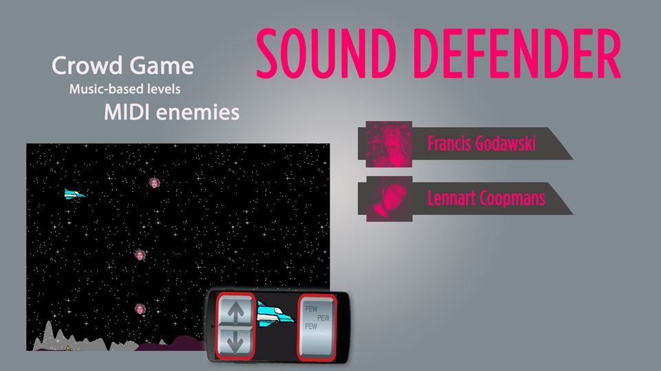

Media meets music: Hackathon
De Compact Disk Dummies daagden een 20tal hackers uit om interactieve app's te ontwikkelen,
die gebruikt werden tijdens het concert op 1 april.
Bekijk het integraal optreden van de Compact Disk Dummies.
Wie maakte welke app?






 mix@iminds.be
mix@iminds.be 09 331 48 45
09 331 48 45 @mixbe
@mixbe